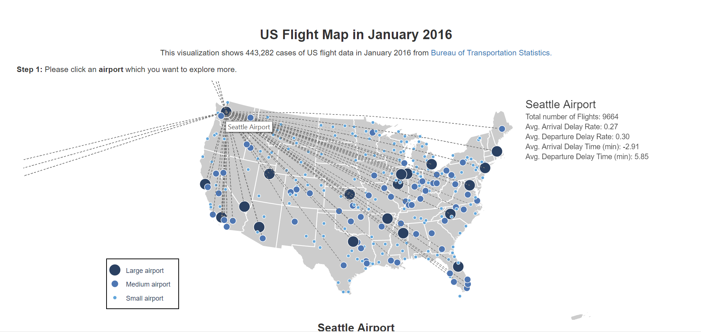
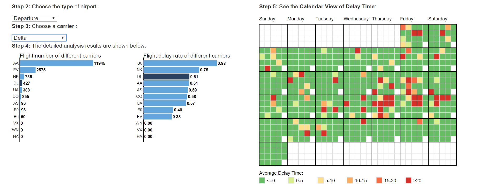

US Flight Map
In this interactive web-based visualizatoin, I used data from Bureau of Transportation Statictics about 443,282 cases of US flight data in January 2016. The main visualization is a flight map which shows all the airports and flight routines in US.
Design Elements:
- Each circle represents an airport. Sizes and colors are used to classify the airports into three sizes: large size, medium size and small size based on the total flight number of this airport in this month.
- Then, the users can hover through each circle. When hovering one airport, the map will show all the flight routes that contain this airport. Also, users could see more detailed information about the performance of this airport like total number of flight, average arrival delay rate, arrival delay rate, arrival delay time and departure delay time. 
- The type of airport means that you want to explore the airport as the departure or arrival airport. In my dataset, I have the data of both departure delay and arrival delay. Although these two types of delay always link together and have no significant difference, it is better to classify them into two different groups. The second dropdown is the carrier. Users can choose different carriers to see their performances in this airport.
- When hovering through each point in Calendar view, users can see the detailed information about the delay time in this specific time interval.
- Under the calendar view, I added the legend of color encoding which could help users to know the meanings of different colors. Since I only care about the delay, I put the delay time (<=0) as one group which include not only on-time flight but also those that arrive or depart in advance. As for the colors I chose, since it is common that red is represented as the high delay rate, I used dark red to represent the highest delay rate and then used two color hue to show the difference.
The second part of this visualization contains more analytical tools. It includes a bar chart about carrier performance and a calendar view which showed the detailed delay time of each time interval every day in January.
Design Elements: